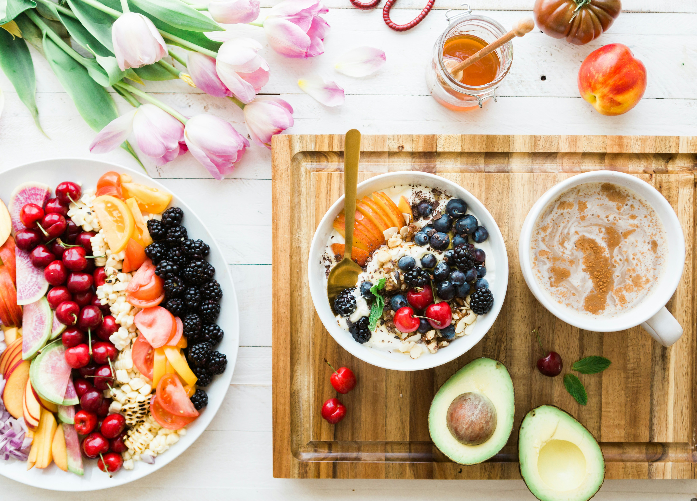

Test
NutriPlan — Nutrition Tracker
JavaScript exam: a 3-page meal app with category/area filtering across 25 meals, detailed nutrition breakdowns, a daily food log, and a product scanner to log packaged foods by name or barcode — all persisted with LocalStorage.
JavaScript
REST API
LocalStorage